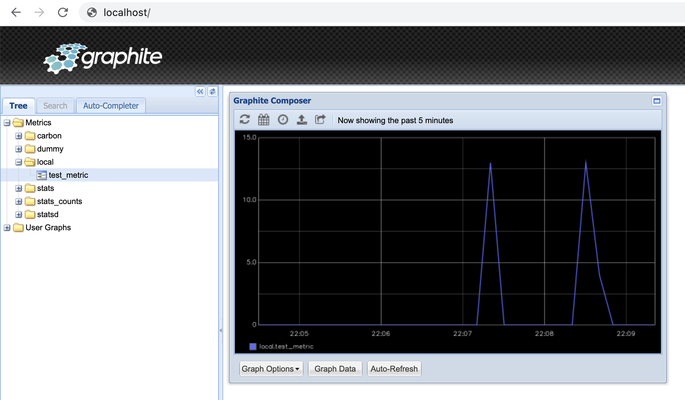

L7: Produktyzacja procesów odkrywania wiedzy#
Docker#
Docker jest narzędziem służącym do konteneryzacji aplikacji, co umożliwia łatwe ich udostępnianie i wdrażanie do środowisk produkcyjnych. Izoluje środowisko aplikacji, wraz z jej zależnościami, w sposób niezależny od środowiska systemu operacyjnego.
Filozofia i terminologia#
Definicja aplikacji i zależności nazywana jest obrazem (ang. image). Na podstawie obrazu, Docker tworzy kontener (ang. container) który zawiera i w którym jest uruchomiona aplikacja.
Publiczne obrazy dockerowe przechowywane są w repozytoriach, z których największym jest Docker Hub
Instalacja#
Należy zainstalować paczkę odpowiednią dla swojego systemu operacyjnego.
Po udanej instalacji warto zweryfikować, czy wszystko przebiegło pomyślnie, odpalając w terminalu:
$ docker run hello-world
Hello from Docker!
This message shows that your installation appears to be working correctly.
To generate this message, Docker took the following steps:
1. The Docker client contacted the Docker daemon.
2. The Docker daemon pulled the "hello-world" image from the Docker Hub.
(amd64)
3. The Docker daemon created a new container from that image which runs the
executable that produces the output you are currently reading.
4. The Docker daemon streamed that output to the Docker client, which sent it
to your terminal.
Podstawowy użycia obrazów i kontenerów#
Załóżmy, że chcemy przetestować kawałek kodu na jednej ze starszych wersji Pythona - niemniej nie chcemy jej instalować w systemie.
Zaczniemy od przeszukania repozytorium w poszukiwaniu obrazu z zainstalowanym Pythonem:
$ docker search python
NAME DESCRIPTION STARS OFFICIAL AUTOMATED
python Python is an interpreted, interactive, objec… 6142 [OK]
django Django is a free web application framework, … 1073 [OK]
pypy PyPy is a fast, compliant alternative implem… 273 [OK]
nikolaik/python-nodejs Python with Node.js 73 [OK]
joyzoursky/python-chromedriver Python with Chromedriver, for running automa… 58 [OK]
arm32v7/python Python is an interpreted, interactive, objec… 57
...
Ok, zaskakująco, nazywa się on python. Spróbujmy ściągnąć wersję obraz z wersją 2.7:
$ docker pull python:2.7
2.7: Pulling from library/python
...
Status: Downloaded newer image for python:2.7
Możemy w każdej chwili sprawdzić, jakie obrazy mamy aktualnie przechowywane lokalnie w systemie:
$ docker images
REPOSITORY TAG IMAGE ID CREATED SIZE
docker/getting-started latest 3ba8f2ff0727 8 weeks ago 27.9MB
hello-world latest d1165f221234 2 months ago 13.3kB
python 2.7 68e7be49c28c 12 months ago 902MB
Ściągnęliśmy obraz, czyli definicję naszej aplikacji. W tym przypadku jest to Linux z zainstalowanym Pythonem w wersji 2.7.
By móc go użyć, trzeba go uruchomić - czyli stworzyć kontener. Podajemy parametry:
flagę
-itby wejść w tryb interaktywny,nazwę obrazu do uruchomienia
polecenie startowe które chcemy uruchomić (zamiast defaultowego)
$ docker run -it python:2.7 bash
root@559279343a97:/# python -V
Python 2.7.18
root@559279343a97:/#
Po wyjściu z kontenera, automatycznie się on wyłącza. Możemy sprawdzić aktualnie istniejące w systemie kontenery przy pomocy:
$ docker ps -a
CONTAINER ID IMAGE COMMAND CREATED STATUS PORTS NAMES
559279343a97 python:2.7 "bash" 3 minutes ago Exited (0) 27 seconds ago peaceful_williamson
Nieużywane kontenery potrafią zająć sporo miejsca na dysku. Dobrym pomysłem jest je regularnie czyścić, przy pomocy:
docker rm CONTAINER_ID, docker container prune lub podając flagę --rm do polecenia docker run --rm
Podstawowe uruchomienie usługi na kontenerze#
Dobrym pomysłem na wykorzystanie Dockera jest uruchomienie w nim różnych usług, które będą działały w tle i obsługiwały żądania.
Przykładowo, możemy wystawić usługę obsługującą prostą, statyczną stronę WWW. Użyjemy następujących parametrów:
flagi
-d(od detatch) w celu uruchomienia kontenera w tleflagi
--namew celu podania przyjaźniejszej nazwy konteneraflagi
-Pw celu otwarcia portów pomiędzy kontenerem a systemem
$ docker run -d -P --name example_site --rm dockersamples/static-site
Unable to find image 'dockersamples/static-site:latest' locally
latest: Pulling from dockersamples/static-site
...
Status: Downloaded newer image for dockersamples/static-site:latest
Sprawdźmy, jakie porty zostały otwarte:
$ docker port example_site
443/tcp -> 0.0.0.0:55000
443/tcp -> :::55000
80/tcp -> 0.0.0.0:55001
80/tcp -> :::55001
Teraz możemy spróbować odpalić stronę serwowaną z kontenera w przeglądarce:

By zatrzymać naszą usługę, wywołamy docker stop example_site
Tworzenie własnych obrazów#
Dla zobrazowania przykładu, stworzymy prostą aplikację która będzie wyświetlała losowe memy z Reddita. W tym celu zostało założone konto do API Reddita, umożliwiające dostęp do zasobów serwisu z poziomu kodu. Rejestracji dokonano poprzez ten formularz
Przygotowanie kodu aplikacji#
Używając bibliotek Flask i praw, tworzymy następujący kod i zapisujemy go w pliku app.py:
from flask import Flask, render_template
import os
import praw
import statsd
app = Flask(__name__)
reddit = praw.Reddit(client_id='...',
client_secret='...',
password="...",
user_agent='...',
username='...')
@app.route("/")
def index():
subreddit = reddit.subreddit("meme")
meme = subreddit.random()
return render_template("index.html", url=meme.url)
if __name__ == "__main__":
app.run(host="0.0.0.0", port=int(os.environ.get("PORT", 5000)))
Zapisujemy potrzebne biblioteki do pliku requirements.txt
Flask==2.0.0
praw==7.2.0
Tworzenie obrazu#
Podstawą do stworzenia obrazu jest plik Dockerfile. Zawiera on definicję obrazu i komendy potrzebne do jego prawidłowej konfiguracji
# definiujemy obraz na którym będziemy bazowali
FROM python
# ustawiamy katalog domyślny dla naszej aplikacji
WORKDIR /usr/src/app
# kopiujemy wszystkie pliki z obecnego katalogu do WORKDIR
COPY . .
# instalujemy zalezności
RUN pip install -r requirements.txt
# definiujemy port który będzie otwarty w kontenerze
EXPOSE 5000
# definiujemy komendę startową
CMD ["python", "./app.py"]
Obraz budujemy przy pomocy polecenia docker build, podając ścieżkę z której nalezy zacząć budowę. Dodatkowo podamy flagę -t określającą nazwę obrazu:
$ docker build -t xaru665/random_reddit_memes .
=> [internal] load build definition from Dockerfile 0.0s
=> => transferring dockerfile: 37B 0.0s
=> [internal] load .dockerignore 0.0s
=> => transferring context: 2B 0.0s
=> [internal] load metadata for docker.io/library/python:latest 0.9s
=> [internal] load build context 0.4s
=> => transferring context: 213.70kB 0.4s
=> [1/4] FROM docker.io/library/python@sha256:f265c5096aa52bdd478d2a5ed097727f517686523ab1b3038cc7d6417 0.0s
=> CACHED [2/4] WORKDIR /usr/src/app 0.0s
=> [3/4] COPY . . 2.6s
=> [4/4] RUN pip install --no-cache-dir -r requirements.txt 31.8s
=> exporting to image 1.6s
=> => exporting layers 1.5s
=> => writing image sha256:d249949a5a45941644cbb134117c504ea4a8dc8c82c49b26a34a92209 0.0s
=> => naming to docker.io/xaru/random_reddit_memes 0.0s
Możemy teraz sprawdzić, czy udało się poprawnie zbudować obraz:
$ docker images
REPOSITORY TAG IMAGE ID CREATED SIZE
xaru665/random_reddit_memes latest d249949a5a45 About a minute ago 952MB
Nie pozostaje nam nic innego niż uruchomić go i cieszyć się działającą aplikacją:
$ docker run -p 6661:5000 xaru665/random_reddit_memes
* Serving Flask app 'app' (lazy loading)
* Environment: production
WARNING: This is a development server. Do not use it in a production deployment.
Use a production WSGI server instead.
* Debug mode: off
* Running on all addresses.
WARNING: This is a development server. Do not use it in a production deployment.
* Running on http://172.17.0.3:5000/ (Press CTRL+C to quit)
Publikacja obrazu w DockerHub#
Stworzywszy swój pierwszy obraz, możemy go opublikować, by udostępnić innym nasze dzieło. Użyjemy repozytorium DockerHub (potrzebne będzie założenie konta)
W celu opublikowania, używamy polecenia docker push - przy pierwszym użyciu będzie też konieczne zalogowanie (przy pomocy docker login:
$ docker login
Login with your Docker ID to push and pull images from Docker Hub. If you don't have a Docker ID, head over to https://hub.docker.com to create one.
Username: xaru665
Password:
Login Succeeded
$ docker push xaru665/random_reddit_memes
Using default tag: latest
The push refers to repository [docker.io/xaru665/random_reddit_memes]
...
Nasz obraz jest już publicznie dostępny pod adresem https://hub.docker.com/r/xaru665/random_reddit_memes i może zostać pobrany i używany publicznie przy pomocy docker pull xaru665/random_reddit_memes
Cały kod użyty w tej części znajduje się TUTAJ
Zbieranie statystyk z aplikacji produkcyjnej#
Kluczową kwestią produktyzacji każdego systemu jest zapewnienie jest bezawaryjnego działania. Jednym ze sposobów jest zbieranie statystyk z działania systemu. Proste rozwiązania, w stylu logowania błędów do plików czy wyświetlania komunikatów na konsolę niestety nie wystarczają - nie są one skalowalne, ponadto ciężko o ich użycie w środowisku rozproszonym.
Istnieje wiele systemów zbierających statystyki - np. Graphite, Prometheus, Amazon Timestream, InfluxDB. Są one sprofilowane do zbierania danych w ujęciu czasowym.
Graphite#
Jest jednym z prostszych systemów - napisany w Pythonie, przechowuje statystyki w formie drzewa plików na dysku. Posiada prosty panel do wyświetlania statystyk.
Do uruchomienia usługi posłużymy się istniejącym obrazem Dockera:
$ docker run -d \
--name graphite \
--restart=always \
-p 80:80 \
-p 2003-2004:2003-2004 \
-p 2023-2024:2023-2024 \
-p 8125:8125/udp \
-p 8126:8126 \
graphiteapp/graphite-statsd
Statystyki w Graphite ułożone są w strukturę drzewiastą. Przyjęło się odpowiednio zagnieżdżać metryki, np. nazwa_serwera.nazwa_programu.nazwa_modułu.nazwa_funkcji.opis_statystyki lub domena.moduł.funkcja itd.
Dla testów, wyślemy jedną metrykę do Graphite. Mamy dostępnych kilka metod zapisu statystyk, nasłuchujących na różnych portach. Użyjemy najprostszego sposobu plaintext, nasłuchującego na porcie 2003:
echo "local.test_metric 13 `date +%s`" | nc localhost 2003
Dashboard Graphite#
Graphite udostępnia prosty interfejs do przeglądu zapisanych metryk, dostępny pod adresem localhost:

Mamy możliwość przeglądania statystyk w czasie (w tym w trybie autoodświeżania) oraz aplikowania sporej dawki różnorakich funkcji, które pozwalają agregować, filtrować i przekształcać wartości metryk.
Budowa aplikacji wielokontenerowej#
Nasza aplikacja rozbudowuje sie - mamy jeden kontener z samą aplikacją i drugi, z Graphitem. Istnieje kilka możliwości zapewnienia komunikacji pomiędzy kontenerami
Sieci w Dockerze#
Docker domyślnie łączy wszystkie kontenery w sieć o nazwie bridge. Możemy sprawdzić jej konfigurację:
$ docker network inspect bridge
[
{
"Name": "bridge",
"Id": "962e283a78f756b5c34b75069d933bcc5a91ef9731e2a2844d9e0ccbf85d0205",
"Created": "2021-05-14T10:31:14.090335101Z",
...
"Containers": {
"4d044d8720a1fbb1bc056fec0b031366061f27162a9771c670ba5b3037f77a01": {
"Name": "mystifying_kirch",
"EndpointID": "c558eb8621995693f00dffdac26582e95c8ea6104f06df2ed9c91fc697cc3811",
"MacAddress": "02:42:ac:11:00:02",
"IPv4Address": "172.17.0.2/16",
"IPv6Address": ""
},
"5ac1b3dd84fc1998aed3d46e829e06bd18fd06565f0c02419fd3aec4a2c76ad9": {
"Name": "graphite",
"EndpointID": "422844bd2b60a83db212415fe1ca393794c50f028d3e16a35cf382cd5d971b18",
"MacAddress": "02:42:ac:11:00:03",
"IPv4Address": "172.17.0.3/16",
"IPv6Address": ""
}
},
...
}
]
Widzimy, że oba kontenery są w sieci, widzimy też ich adresy IP. Możemy ich użyć do komunikacji pomiędzykontenerowej.
Niestety, to rozwiązanie ma swoje wady - z racji wpięcia wszystkich kontenerów do tej sieci, komunikacja między nimi nie jest izolowana. Można to rozwiązać tworząc osobną sieć i odpowiednio rekonfigurując kontenery, niemniej Docker udostępnia lepszą opcję.
Docker Compose#
W celu tworzenia aplikacji wielokontenerowych, polecane jest użycie narzędzia Docker Compose. Definiując odpowiednio cały system, możemy jednym poleceniem budować i uruchamiać wszystkie potrzebne kontenery. Ponadto są one spięte izolowaną siecią, więc nie ma ryzyka kolizji z kontenerami spoza scope naszej aplikacji.
W niektórych przypadkach Docker Compose nie instaluje się razem z Dockerem. Należy go wtedy zainstalować, przy pomocy:
pip install docker-compose
Kluczem do sukcesu jest odpowiednie zdefiniowanie systemu w pliku docker-compose.yml:
services:
# definicja kontenerów używanych w naszej aplikacji
graphite:
# kontener bazowy
image: graphiteapp/graphite-statsd
container_name: graphite
environment:
- discovery.type=single-node
ports:
- 80:80
- 2003-2004:2003-2004
- 2023-2024:2023-2024
- 8125:8125/udp
- 8126:8126
restart: always
app:
# nie podajemy nazwy obrazu dla naszej aplikacji, lecz każemy compose przebudować ją w miarę potrzeb
build: .
container_name: app
# parametr depends_on wymusza kolejnośc uruchomienia kontenerów
depends_on:
- graphite
environment:
- DEBUG=True
ports:
- 6661:5000
Przed uruchomieniem, musimy zatrzymać i usunąć poprzednio stworzone kontenery:
$ docker container ls
CONTAINER ID IMAGE COMMAND CREATED STATUS PORTS NAMES
5ac1b3dd84fc graphiteapp "/entrypoint" About an hour ago Up About an hour ... graphite
4d044d8720a1 d249949a5a45 "python ./app.py" 5 hours ago Up 5 hours ... mystifying_kirch
$ docker stop 5ac1b3dd84fc 4d044d8720a1
5ac1b3dd84fc
4d044d8720a1
$ docker rm 5ac1b3dd84fc 4d044d8720a1
5ac1b3dd84fc
4d044d8720a1
Możemy teraz uruchomić nasz świeżo stworzony system aplikacji:
$ docker compose up
[+] Running 2/2
⠿ Container graphite Created 0.2s
⠿ Container lab6_app_1 Created 0.1s
Attaching to graphite, app_1
...
Możemy przetestować nasze endpointy do obu kontenerów - http://localhost:6661/ i http://localhost
Rozpoczęcie zbierania danych do Graphite z kodu#
W celu łatwej interakcji z Graphitem, posłużymy sie biblioteką StatsD, dołączając do pliku requirements.txt wymagane zależności:
Flask==2.0.0
praw==7.2.0
statsd==3.3.0
oraz odpowiednio modyfikując kod aplikacji:
from flask import Flask, render_template
import os
import random
import praw
import statsd
# dzięki użyciu Docker Compose, możemy w kodzie odwoływać się do nazw kontenerów zamiast adresów IP - Docker rozwiąże adresy sam za nas
stats = statsd.StatsClient('graphite', 8125)
app = Flask(__name__)
reddit = praw.Reddit(client_id='WdgsSyHEDgL8_g',
client_secret='Mqs5rCsVze9iNM3QrmqjXDNulCBYxg',
password="aaa111bbb222",
user_agent='meme_displayer',
username='SecretCauliflower665')
# mierzymy czas wykonania tej funkcji
@stats.timer('random_reddit_memes.request_times')
@app.route("/")
def index():
# mierzymy liczbę wywołań tej funkcji
stats.incr('random_reddit_memes.requests')
subreddit = reddit.subreddit("meme")
meme = subreddit.random()
return render_template("index.html", url=meme.url)
if __name__ == "__main__":
stats.incr('random_reddit_memes.spawned')
app.run(host="0.0.0.0", port=int(os.environ.get("PORT", 5000)))
Po przeładowaniu kontenerów:
$ docker compose up -d --build
i kilkukrotnym odświeżeniu strony naszej aplikacji, możemy obserwować jak statystyki zbierają się w Graphicie:

Typy danych w Graphite#
Istotną cechą jest posiadanie przez Graphite okna czasowego - domyślnie 15 sekund.
Wyróżniamy trzy podstawowe typy danych:
gauge - najprostsza statystyka, określająca poziom jakiejś metryki. W przypadku wielokrotnego podbicia statystyki w oknie czasowym, zapisywana jest ostatnia wartość
counter - określa ilość wystąpień jakiegoś zjawiska. W przypadku wielokrotnego podbicia w oknie czasowym, zapisywana jest agregacja (domyślnie średnia)
timer - określa wartość rzeczywistą (np. czas trwania). W oknie czasowym liczone są dla niej dodatkowe statystyki - jak średnia, max, min i ilość podbić.
Więcej informacji o typach danych w dokumentacji
Grafana: ładniejsze wykresy, więcej możliwości#
Dashboard oferowany natywnie przez Graphite jest dość siermiężny jeśli chodzi o UX. Dobrym rozwiązaniem jest dołożenie kolejnej warstwy - Grafany
Grafana to zaawansowane narzędzie monitoringu, pozwalające mocno rozwijać i konfigurować dashboardy i wykresy. Ma możliwość jednoczesnego czytania z wielu źródeł - Graphite jest jednym z nich.
W Grafanie możemy łatwo:
tworzyć zaawansowane wykresy z możliwością używania zmiennych
agregować dane z różnych źródeł
sprawdzać historyczny stan statystyk
określać alerty
Możemy łatwo dołożyć Grafanę do naszego stacku, modyfikując plik docker-compose.yml:
services:
graphite:
...
app:
...
grafana:
image: grafana/grafana
container_name: grafana
ports:
- 3000:3000
depends_on:
- graphite
Po przeładowaniu systemu:
$ docker compose up -d --build
Możemy się zalogować do Grafany (adres http://localhost:3000, dane dostępowe admin/admin):

Podpięcie Grafany do Graphite#
Nowe źródła podajemy w konfiguracji Grafany (Configuration > Data Sources > Add data source):

Wybieramy Graphite, podajemy nazwę naszego Graphitowego kontenera jako adres i defaultowy port:
Możemy teraz rozpocząć dodawanie statystyk i budowanie dashboardów:
Streamlit - proste budowanie frontendu do aplikacji AI#
Istnieje szereg narzędzi pozwalających w prosty sposób zbudować w pełni funkcjonalną i interaktywną stronę. Dzięki temu możemy skupić się na tworzeniu i rozwijaniu rozwiązań AI, przy jednoczesnym prostym ich popularyzowaniu.
Jednym z nich jest Streamlit. Jest to biblioteka renderująca skrypt Pythona do formy strony WWW.
Przerobimy naszą przykładową aplikację, przy okazji rozszerzając jej funkcjonalności, umieszczając w pliku app2.py:
import praw
# importujemy bibliotekę
import streamlit as st
reddit = praw.Reddit(client_id='WdgsSyHEDgL8_g',
client_secret='Mqs5rCsVze9iNM3QrmqjXDNulCBYxg',
password="aaa111bbb222",
user_agent='meme_displayer',
username='SecretCauliflower665')
# dodajemy możliwość wybrania jednej z predefiniowanych opcji
subreddit_name = st.radio('What kind of memes do you like?',
['meme', 'aww', 'funny', 'polandball', 'MemesIRL'])
# dodajemy slider z możliwością wyboru liczby
memes_count = st.slider("How many memes you want to see?", 1, 10)
subreddit = reddit.subreddit(subreddit_name)
for i in range(memes_count):
meme = subreddit.random()
if meme is not None:
st.image(meme.url)
Dorzucamy też zależność do wymaganych:
streamlit==0.82.0
praw==7.2.0
Zmodyfikujemy też plik Dockerfile naszej aplikacji, by używała nowej biblioteki:
FROM python
# ustawiamy katalog domyślny dla naszej aplikacji
WORKDIR /usr/src/app
# kopiujemy wszystkie pliki z obecnego katalogu do WORKDIR
COPY . .
# instalujemy zalezności
#RUN pip install -r requirements.txt
RUN pip install -r requirements2.txt
# definiujemy port który będzie otwarty w kontenerze
EXPOSE 5000
# definiujemy komendę startową
#CMD ["python", "./app.py"]
CMD ["streamlit", "run", "./app2.py", "--server.port", "5000"]
Po przebudowaniu i uruchomieniu naszej aplikacji, ukazuje nam się całkowicie odświeżona strona, z nowymi możliwościami:

Jak działa Streamlit?#
Streamlit uruchamia serwer, obsługujący aplikację.
Każda zmiana powoduje ponowne uruchomienie całego skryptu aplikacji i wyrenderowanie strony - stąd kod jest maksymalnie uproszczony. Zmianą jest zarówno zmiana kodu źródłowego (łatwe dewelopowanie aplikacji) jak i zmiana elementów widgetów strony (interaktywność)
Streamlit posiada też silnie rozbudowany mechanizm cache. Podanie przed funkcją dekoratora @streamlit.cache powoduje, że wyjście danej funkcji zostaje zcachowane (dla danych parametrów wejściowych), co pozwala znacząco przyspieszyć działanie aplikacji
Dostępne typy widgetów#
Streamlit udostępnia wiele rodzajów interaktywnych widgetów i wykresów. Ich działanie, wraz z potrzebnym do ich wygenerowania kodem, możemy obejrzeć w dokumentacji lub w demo dostępnym po odpaleniu:
streamlit hello